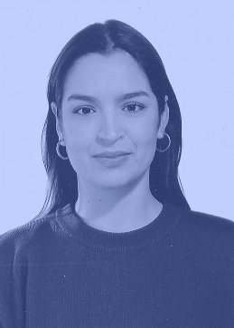

Esta soy yo
¡Hola!
Desde 2022 trabajo como diseñadora gráfica freelance. He trabajado en desarrollo de identidades
gráficas, diseños web, proyectos de maquetación, cartelería y gestión de comunicación para eventos.
Como autónoma, he estado en trabajos muy variados, adaptándome y manejando
distintos ritmos y
necesidades, cogiendo tanto proyectos a largo plazo como encargos más puntuales. Me defino como un
perfil generalista, con una gran capacidad de adaptabilidad y con una visión global de los proyetcos
de diseño.
Disfruto trabajando codo a codo con cada cliente, escuchando sus ideas y transformándolas en
soluciones visuales que tengan sentido. Para mí, el diseño es mucho más que una cuestión estética:
es una forma de comunicar, conectar y crear herramientas que ayuden a que cada proyecto hable con su
propia voz.
Experiencia laboral
2022
Apoyo al diseño gráfico en el Instituto CEGEA, UPV, Valencia.
2021
Prácticas de empresa como diseñadora gráfica en el agencia Weaddyou, Valencia.
2022
Diseñadora gráfica y web en el estudio Arysa, Valencia.
2022- Actualmente
Diseñadora gráfica autónoma
Estudios
2014-201
Grado de Bellas Artes en la Universidad San Carlos, UPV,
Valencia.
2018-2020
Máster en Producción Artística en la Universidad San Carlos, UPV, Valencia.
2020-2021
Máster en Diseño Gráfico en Barreira A+D, Valencia.
2023- 2024
Programa de Estudios Articulacions, IVAM Valencia.